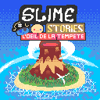
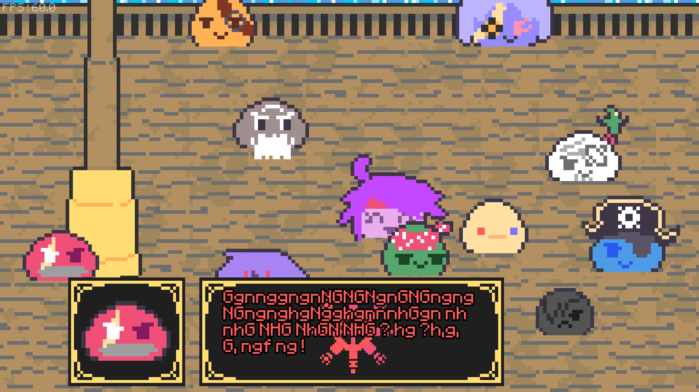

La Déchéance du Slime le plus Faible de SlimeCity (jam edition)
Ce jeu est un jeu d'action en 2D isométrique. Le jeu a été créé à l'occasion de la Baudo's Jam Automn 2025 edition.
Gameplay : JRPG tour par tour classique
Histoire : Un équipage de pirates, l'Engrenage rouge, échoue sur une île mystérieuse. Ils sont séparés et vont devoir se rassembler au complet pour partir, mais la corruption semble s'être installée sur cette île...
Équipe : Bello (code, musique, SFX, histoire, design, voix de Paavot) - Baldéos (graphismes, histoire, design) - ian, Codebrain, valrickhs, Luxy, zetoil, Blobby, FX, Léane, Boing, Nolopi, [censuré], jaimelespates, BelloBot (voix de Jökull, Auguste, Elias, Ziphone, Slavko, Vanessa, Kurtz, Ailha, Dа́mian, Aivaas, Ifris, Rölf et BelloBot respectivement)
Dates : 21 Février 2026 (début de la jam) - 28 Février 2026 (fin de la jam)
Résultats : Overall : 7ème - Fun : 10ème - Visual : 8ème - Créativité : 6ème - Sound design : 7ème - Selon Baudo : 8ème
Liens
Liens : Le jeu - La jam - OST
Images du jeu

